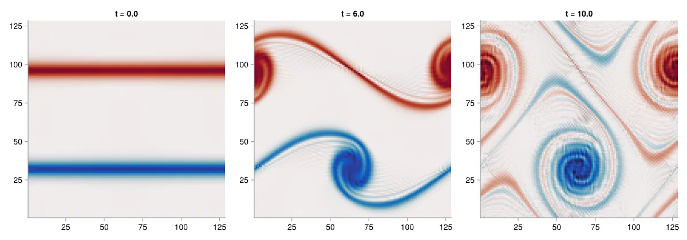
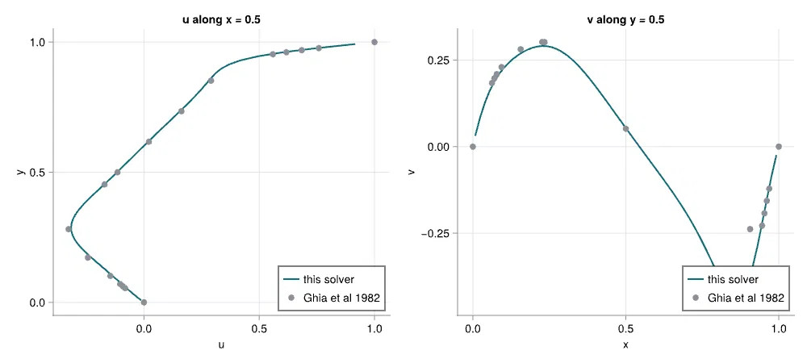

Solver_2D: a verified incompressible Navier-Stokes solver
Personal project · May 2026 – present · github.com/adiikumar/Solver_2DA 2D incompressible Navier-Stokes solver on a staggered MAC grid, written from scratch. CFD is an unforgiving place to write code: a sign error still compiles, still runs, and still draws a plausible contour, because correctness lives in long-range consistency across files rather than in local syntax. I kept the codebase small enough that reviewing every line was literally possible, and built the solver with an AI agent under a spec, review and run gate to see where that workflow holds and where it needs checking.
| Formulation | Primitive variables, staggered MAC grid, RK3 fractional step (Le & Moin, JCP 1991) |
| Pressure Poisson | FFT with modified wavenumbers (periodic) · unpreconditioned CG (wall-bounded) |
| Discrete structure | Gradient built as minus the divergence transpose, so projection removes divergence exactly |
| Simplification | Projection applied at every RK3 substage, documented rather than silent |
| Workflow | Spec, generate, review, run. Human-gated throughout, with no autonomous execution |
15/15unit tests passing, run locally
2nd orderMMS convergence, 4 grids
Re 100 / 400cavity vs. Ghia et al. 1982

Centerline u(y) and v(x), Re 100 lid-driven cavity, overlaid against Ghia et al. 1982